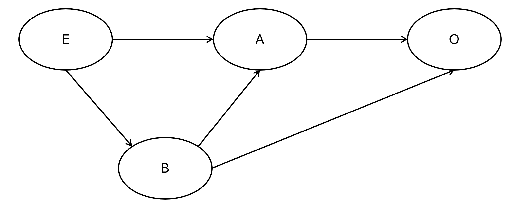
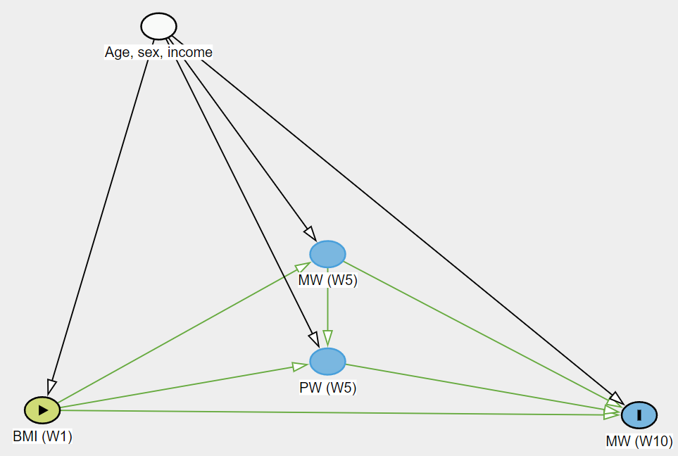

Chapter 7 Causal Inference: Mediation and Instrumental Variables
In previous chapters, we focused on establishing associations between variables. However, in health data science, we often want to understand the causal mechanisms driving these associations. This chapter introduces two advanced causal inference techniques: mediation analysis (to understand how an exposure affects an outcome) and instrumental variable variables (to estimate causal effects in the presence of unmeasured confounding).
The mediation analysis will be based on the CMAverse package which is not available from the CRAN (the official repository for R packages) but could be installed from Github (a commonly used developer maintained respository) using the following command. You may not have the devtool installed on your computer yet. If that’s the case, please install it first.
7.1 Data Preparation for Causal Modeling
When investigating causal pathways, the timing of measurements is critical. An exposure must precede a mediator, which in turn must precede the outcome. Therefore, longitudinal data is typically required. You could, technically, use mediation analysis to analyse cross-sectional data, but the estimated ‘effects’ could reflect (partly) reverse cauation.
In the mediation analysis, we will still be focusing on the Understanding Society longitudinal data. The primary hypothesis was to examine whether physical well-being (PW) (mediator) could be a mechanism between BMI (exposure) and MW (outcome).
## Rows: 11447 Columns: 10
## ── Column specification ────────────────────────────────────────────────────────
## Delimiter: ","
## chr (2): sex, income
## dbl (8): age, bmi, pw1, mw1, pw5, mw5, pw9, mw9
##
## ℹ Use `spec()` to retrieve the full column specification for this data.
## ℹ Specify the column types or set `show_col_types = FALSE` to quiet this message.As usual, it is essential to inspect the descriptive statistics before conducting more complex models. We use the statistic argument to specify that we want the mean and SD for all continuous variables, and the digits argument to round the results neatly.
# Generate descriptive statistics table
tbl_summary(
dat,
statistic = list(all_continuous() ~ '{mean} ({sd})'),
digits = list(all_continuous() ~ c(1, 1),
all_categorical() ~ c(0, 1))
)| Characteristic | N = 11,4471 |
|---|---|
| age | 49.1 (14.9) |
| sex | |
| Female | 6,532 (57.1%) |
| Male | 4,915 (42.9%) |
| income | |
| Higher income | 5,739 (50.1%) |
| Lower income | 5,708 (49.9%) |
| bmi | 26.7 (5.0) |
| pw1 | 50.6 (10.2) |
| mw1 | 51.3 (9.2) |
| pw5 | 49.6 (10.9) |
| mw5 | 49.9 (9.5) |
| pw9 | 48.4 (11.4) |
| mw9 | 49.7 (10.0) |
| 1 Mean (SD); n (%) | |
7.2 Mediation Analysis
Mediation analysis attempts to unpack the Total Effect of an exposure on an outcome into two parts: 1. Direct Effect: The effect of the exposure directly on the outcome. 2. Indirect Effect: The effect of the exposure on the outcome that passes through a third variable (the mediator).
7.2.1 The Base Model (Total Effect)
Before looking for a mediator, we establish the baseline association. Here, we model mental wellbeing at Wave 9 (mw9) based on baseline BMI (bmi), adjusting for sociodemographic confounders and baseline wellbeing.
# Base model predicting Wave 9 mental wellbeing
m0 <- lm(mw9 ~ bmi + age + sex + income + mw1 + pw1, data=dat)
tbl_regression(m0)| Characteristic | Beta | 95% CI | p-value |
|---|---|---|---|
| bmi | -0.04 | -0.08, -0.01 | 0.010 |
| age | 0.15 | 0.13, 0.16 | <0.001 |
| sex | |||
| Female | — | — | |
| Male | 0.47 | 0.13, 0.81 | 0.006 |
| income | |||
| Higher income | — | — | |
| Lower income | -0.78 | -1.1, -0.44 | <0.001 |
| mw1 | 0.42 | 0.40, 0.43 | <0.001 |
| pw1 | 0.16 | 0.14, 0.18 | <0.001 |
| Abbreviation: CI = Confidence Interval | |||
7.2.2 Difference Method for Mediation
The simplest way to check for mediation is the “difference method”. It is simply done by adding the candidate mediator (PW at Wave 5, pw5) into the regression model. If PW mediates the relationship between BMI and MW, the coefficient for BMI should attenuate noticeably in the new model compared with the base model.
The codes below fit a second linear model (m1) that includes pw5. We then use gtsummary::tbl_merge() to put both models side-by-side for easy visual comparison. Minimal differences between the BMI coefficients across the two models suggest minimal mediation.
# Adjusted model including the mediator (pw5)
m1 <- lm(mw9 ~ bmi + age + sex + income + pw5 + mw1 + pw1, data=dat)
# Merge tables for side-by-side comparison
tbl_merge(
list(tbl_regression(m0), tbl_regression(m1)),
tab_spanner = c('Not adjusted for PW', 'Adjusted for PW')
)## The number rows in the tables to be merged do not match, which may result in
## rows appearing out of order.
## ℹ See `tbl_merge()` (`?gtsummary::tbl_merge()`) help file for details. Use
## `quiet=TRUE` to silence message.| Characteristic |
Not adjusted for PW
|
Adjusted for PW
|
||||
|---|---|---|---|---|---|---|
| Beta | 95% CI | p-value | Beta | 95% CI | p-value | |
| bmi | -0.04 | -0.08, -0.01 | 0.010 | -0.04 | -0.08, -0.01 | 0.014 |
| age | 0.15 | 0.13, 0.16 | <0.001 | 0.15 | 0.14, 0.16 | <0.001 |
| sex | ||||||
| Female | — | — | — | — | ||
| Male | 0.47 | 0.13, 0.81 | 0.006 | 0.48 | 0.14, 0.82 | 0.006 |
| income | ||||||
| Higher income | — | — | — | — | ||
| Lower income | -0.78 | -1.1, -0.44 | <0.001 | -0.77 | -1.1, -0.43 | <0.001 |
| mw1 | 0.42 | 0.40, 0.43 | <0.001 | 0.41 | 0.40, 0.43 | <0.001 |
| pw1 | 0.16 | 0.14, 0.18 | <0.001 | 0.15 | 0.13, 0.17 | <0.001 |
| pw5 | 0.01 | -0.01, 0.03 | 0.3 | |||
| Abbreviation: CI = Confidence Interval | ||||||
7.2.3 Sobel Test
The Sobel test is a traditional statistical test to determine if the indirect effect is significantly different from zero. The codes below use bda::mediation.test(mediator, exposure, outcome) to conduct the Sobel test. Warning: This test is rudimentary and does not adjust for any confounders. It is not recommended for observational health data unless you are absolutely certain no confounding exists.
7.2.4 Parametric G-Formula
Sobel test is unadjusted so rarely applicable. The difference method also has several limitations: 1. Only applicable for linear or count regression. Linear and Poisson models are called ‘collapsible’ meaning that the coefficient of a variable would not change when an additional, unrelated, variable is added in. Logistic and Cox regressions are ‘non-collapsible’, meaning that coefficients would ‘naturally’ change whenever an additional variable is added in, even if that additional variable is unrelated to the exposure. 2. These regression models do not handle exposure-induced mediator-outcome confounder. See figure below. E is exposure; O is outcome; A is mediator of interest. B is also a mediator between E and O, but confounds the relationship between M and O. Regression difference methods cannot address the influence of B.

Modern causal inference relies on more robust methods, such as the parametric g-formula (also known as g-computation), which can handle complex confounding scenarios (including interactions between the exposure and the meditor). In R, we use the cmest() function from the CMAverse package.
7.2.4.1 Without Exposure-Induced Confounders
The cmest() function is quite complex in that it does not use the formula for models, and a larger number of input is required to get it to work. Below breaks down the input:
modelspecify the models to be run. We will need gformula here as it can address exposure-induced mediator-outcome confounder.mregandyreg: Specify the regression types for the mediator and outcome models (e.g., ‘linear’ or ‘logistic’).exposure,mediatorandoutcomeare self-explanatory - just the variable names for these causal roles.basecis the baseline confounders.ais the intervention value andastaris the reference value. While the exposure variable is numeric, cmest needs these two to caulate the total, direct and indirect effect. The total effect for this code below is, therefore, comparing 26.69 (mean in this sample) with the overweight cut-off (25).mvalis the reference value for the mediator, similar to whatastardoes.mregandyregindicate the regression you want to use for the simulation. It usually depends on the variable type of the mediator and the outcome.EMint=FALSE: Specifies that we are not evaluating exposure-mediator interaction.
library(CMAverse)
# G-formula mediation analysis
mm1 <- cmest(
data = dat,
model = 'gformula',
exposure = 'bmi',
mediator = 'pw5',
outcome = 'mw9',
basec = c('age', 'sex', 'income', 'mw1', 'pw1'),
a = 26.69,
astar = 25,
mreg = list('linear'),
mval = list(50),
yreg = 'linear',
EMint = FALSE
) ## | | | 0% | |= | 1% | |= | 2% | |== | 2% | |== | 3% | |== | 4% | |=== | 4% | |==== | 5% | |==== | 6% | |===== | 6% | |===== | 7% | |===== | 8% | |====== | 8% | |====== | 9% | |======= | 10% | |======== | 11% | |======== | 12% | |========= | 12% | |========= | 13% | |========= | 14% | |========== | 14% | |========== | 15% | |=========== | 16% | |============ | 16% | |============ | 17% | |============ | 18% | |============= | 18% | |============= | 19% | |============== | 20% | |=============== | 21% | |=============== | 22% | |================ | 22% | |================ | 23% | |================ | 24% | |================= | 24% | |================== | 25% | |================== | 26% | |=================== | 26% | |=================== | 27% | |=================== | 28% | |==================== | 28% | |==================== | 29% | |===================== | 30% | |====================== | 31% | |====================== | 32% | |======================= | 32% | |======================= | 33% | |======================= | 34% | |======================== | 34% | |======================== | 35% | |========================= | 36% | |========================== | 36% | |========================== | 37% | |========================== | 38% | |=========================== | 38% | |=========================== | 39% | |============================ | 40% | |============================= | 41% | |============================= | 42% | |============================== | 42% | |============================== | 43% | |============================== | 44% | |=============================== | 44% | |================================ | 45% | |================================ | 46% | |================================= | 46% | |================================= | 47% | |================================= | 48% | |================================== | 48% | |================================== | 49% | |=================================== | 50% | |==================================== | 51% | |==================================== | 52% | |===================================== | 52% | |===================================== | 53% | |===================================== | 54% | |====================================== | 54% | |====================================== | 55% | |======================================= | 56% | |======================================== | 56% | |======================================== | 57% | |======================================== | 58% | |========================================= | 58% | |========================================= | 59% | |========================================== | 60% | |=========================================== | 61% | |=========================================== | 62% | |============================================ | 62% | |============================================ | 63% | |============================================ | 64% | |============================================= | 64% | |============================================== | 65% | |============================================== | 66% | |=============================================== | 66% | |=============================================== | 67% | |=============================================== | 68% | |================================================ | 68% | |================================================ | 69% | |================================================= | 70% | |================================================== | 71% | |================================================== | 72% | |=================================================== | 72% | |=================================================== | 73% | |=================================================== | 74% | |==================================================== | 74% | |==================================================== | 75% | |===================================================== | 76% | |====================================================== | 76% | |====================================================== | 77% | |====================================================== | 78% | |======================================================= | 78% | |======================================================= | 79% | |======================================================== | 80% | |========================================================= | 81% | |========================================================= | 82% | |========================================================== | 82% | |========================================================== | 83% | |========================================================== | 84% | |=========================================================== | 84% | |============================================================ | 85% | |============================================================ | 86% | |============================================================= | 86% | |============================================================= | 87% | |============================================================= | 88% | |============================================================== | 88% | |============================================================== | 89% | |=============================================================== | 90% | |================================================================ | 91% | |================================================================ | 92% | |================================================================= | 92% | |================================================================= | 93% | |================================================================= | 94% | |================================================================== | 94% | |================================================================== | 95% | |=================================================================== | 96% | |==================================================================== | 96% | |==================================================================== | 97% | |==================================================================== | 98% | |===================================================================== | 98% | |===================================================================== | 99% | |======================================================================| 100%## Causal Mediation Analysis
##
## # Outcome regression:
##
## Call:
## glm(formula = mw9 ~ bmi + pw5 + age + sex + income + mw1 + pw1,
## family = gaussian(), data = getCall(x$reg.output$yreg)$data,
## weights = getCall(x$reg.output$yreg)$weights)
##
## Coefficients:
## Estimate Std. Error t value Pr(>|t|)
## (Intercept) 14.191383 0.962287 14.748 < 2e-16 ***
## bmi -0.042081 0.017165 -2.452 0.01424 *
## pw5 0.010308 0.010184 1.012 0.31145
## age 0.146857 0.005951 24.679 < 2e-16 ***
## sexMale 0.475746 0.173281 2.746 0.00605 **
## incomeLower income -0.769377 0.175231 -4.391 1.14e-05 ***
## mw1 0.414963 0.009293 44.654 < 2e-16 ***
## pw1 0.153454 0.010648 14.412 < 2e-16 ***
## ---
## Signif. codes: 0 '***' 0.001 '**' 0.01 '*' 0.05 '.' 0.1 ' ' 1
##
## (Dispersion parameter for gaussian family taken to be 77.79097)
##
## Null deviance: 1149883 on 11446 degrees of freedom
## Residual deviance: 889851 on 11439 degrees of freedom
## AIC: 82336
##
## Number of Fisher Scoring iterations: 2
##
##
## # Mediator regressions:
##
## Call:
## glm(formula = pw5 ~ bmi + age + sex + income + mw1 + pw1, family = gaussian(),
## data = getCall(x$reg.output$mreg[[1L]])$data, weights = getCall(x$reg.output$mreg[[1L]])$weights)
##
## Coefficients:
## Estimate Std. Error t value Pr(>|t|)
## (Intercept) 22.455678 0.858155 26.167 <2e-16 ***
## bmi -0.161136 0.015687 -10.272 <2e-16 ***
## age -0.130348 0.005326 -24.476 <2e-16 ***
## sexMale -0.192978 0.159077 -1.213 0.225
## incomeLower income -1.469886 0.160290 -9.170 <2e-16 ***
## mw1 0.157503 0.008404 18.742 <2e-16 ***
## pw1 0.604168 0.007978 75.728 <2e-16 ***
## ---
## Signif. codes: 0 '***' 0.001 '**' 0.01 '*' 0.05 '.' 0.1 ' ' 1
##
## (Dispersion parameter for gaussian family taken to be 65.5689)
##
## Null deviance: 1371759 on 11446 degrees of freedom
## Residual deviance: 750108 on 11440 degrees of freedom
## AIC: 80378
##
## Number of Fisher Scoring iterations: 2
##
##
## # Effect decomposition on the mean difference scale via the g-formula approach
##
## Direct counterfactual imputation estimation with
## bootstrap standard errors, percentile confidence intervals and p-values
##
## Estimate Std.error 95% CIL 95% CIU P.val
## cde -0.071117 0.027775 -0.124265 -0.012 0.02 *
## pnde -0.071117 0.027775 -0.124265 -0.012 0.02 *
## tnde -0.071117 0.027775 -0.124265 -0.012 0.02 *
## pnie -0.002807 0.003133 -0.008243 0.003 0.33
## tnie -0.002807 0.003133 -0.008243 0.003 0.33
## te -0.073924 0.027471 -0.126352 -0.014 <2e-16 ***
## pm 0.037973 0.519737 -0.049341 0.258 0.33
## ---
## Signif. codes: 0 '***' 0.001 '**' 0.01 '*' 0.05 '.' 0.1 ' ' 1
##
## (cde: controlled direct effect; pnde: pure natural direct effect; tnde: total natural direct effect; pnie: pure natural indirect effect; tnie: total natural indirect effect; te: total effect; pm: overall proportion mediated)
##
## Relevant variable values:
## $a
## [1] 26.69
##
## $astar
## [1] 25
##
## $mval
## $mval[[1]]
## [1] 50The results are consistent with the difference method - no mediation. It is not surprising because we have not done anything different from the difference method.
7.2.4.2 With Exposure-Induced Confounders
Suppose if we think MW at wave 5 could confound the relationship between PW at wave 5 and MW at wave 10:

This can be modelled by adding one more argument to the cmest() function - the postc. It is to specify the intermediate (post-exposure) confounder (mw5). We also must tell the function how to model this intermediate variable using the postcreg argument (here, as a ‘linear’ regression).
mm2 <- cmest(
data = dat,
model = 'gformula',
exposure = 'bmi',
mediator = 'pw5',
outcome = 'mw9',
basec = c('age', 'sex', 'income', 'mw1', 'pw1'),
postc = c('mw5'), # The exposure-induced confounder
a = 26.69,
astar = 25,
mreg = list('linear'),
mval = list(50),
postcreg = list('linear'), # Regression model for the confounder
yreg = 'linear',
EMint = FALSE
) ## | | | 0% | |= | 1% | |= | 2% | |== | 2% | |== | 3% | |== | 4% | |=== | 4% | |==== | 5% | |==== | 6% | |===== | 6% | |===== | 7% | |===== | 8% | |====== | 8% | |====== | 9% | |======= | 10% | |======== | 11% | |======== | 12% | |========= | 12% | |========= | 13% | |========= | 14% | |========== | 14% | |========== | 15% | |=========== | 16% | |============ | 16% | |============ | 17% | |============ | 18% | |============= | 18% | |============= | 19% | |============== | 20% | |=============== | 21% | |=============== | 22% | |================ | 22% | |================ | 23% | |================ | 24% | |================= | 24% | |================== | 25% | |================== | 26% | |=================== | 26% | |=================== | 27% | |=================== | 28% | |==================== | 28% | |==================== | 29% | |===================== | 30% | |====================== | 31% | |====================== | 32% | |======================= | 32% | |======================= | 33% | |======================= | 34% | |======================== | 34% | |======================== | 35% | |========================= | 36% | |========================== | 36% | |========================== | 37% | |========================== | 38% | |=========================== | 38% | |=========================== | 39% | |============================ | 40% | |============================= | 41% | |============================= | 42% | |============================== | 42% | |============================== | 43% | |============================== | 44% | |=============================== | 44% | |================================ | 45% | |================================ | 46% | |================================= | 46% | |================================= | 47% | |================================= | 48% | |================================== | 48% | |================================== | 49% | |=================================== | 50% | |==================================== | 51% | |==================================== | 52% | |===================================== | 52% | |===================================== | 53% | |===================================== | 54% | |====================================== | 54% | |====================================== | 55% | |======================================= | 56% | |======================================== | 56% | |======================================== | 57% | |======================================== | 58% | |========================================= | 58% | |========================================= | 59% | |========================================== | 60% | |=========================================== | 61% | |=========================================== | 62% | |============================================ | 62% | |============================================ | 63% | |============================================ | 64% | |============================================= | 64% | |============================================== | 65% | |============================================== | 66% | |=============================================== | 66% | |=============================================== | 67% | |=============================================== | 68% | |================================================ | 68% | |================================================ | 69% | |================================================= | 70% | |================================================== | 71% | |================================================== | 72% | |=================================================== | 72% | |=================================================== | 73% | |=================================================== | 74% | |==================================================== | 74% | |==================================================== | 75% | |===================================================== | 76% | |====================================================== | 76% | |====================================================== | 77% | |====================================================== | 78% | |======================================================= | 78% | |======================================================= | 79% | |======================================================== | 80% | |========================================================= | 81% | |========================================================= | 82% | |========================================================== | 82% | |========================================================== | 83% | |========================================================== | 84% | |=========================================================== | 84% | |============================================================ | 85% | |============================================================ | 86% | |============================================================= | 86% | |============================================================= | 87% | |============================================================= | 88% | |============================================================== | 88% | |============================================================== | 89% | |=============================================================== | 90% | |================================================================ | 91% | |================================================================ | 92% | |================================================================= | 92% | |================================================================= | 93% | |================================================================= | 94% | |================================================================== | 94% | |================================================================== | 95% | |=================================================================== | 96% | |==================================================================== | 96% | |==================================================================== | 97% | |==================================================================== | 98% | |===================================================================== | 98% | |===================================================================== | 99% | |======================================================================| 100%## Causal Mediation Analysis
##
## # Outcome regression:
##
## Call:
## glm(formula = mw9 ~ bmi + pw5 + age + sex + income + mw1 + pw1 +
## mw5, family = gaussian(), data = getCall(x$reg.output$yreg)$data,
## weights = getCall(x$reg.output$yreg)$weights)
##
## Coefficients:
## Estimate Std. Error t value Pr(>|t|)
## (Intercept) 6.676152 0.910379 7.333 2.40e-13 ***
## bmi -0.041437 0.015935 -2.600 0.00932 **
## pw5 0.091005 0.009640 9.441 < 2e-16 ***
## age 0.111515 0.005585 19.966 < 2e-16 ***
## sexMale 0.212510 0.160979 1.320 0.18683
## incomeLower income -0.545260 0.162756 -3.350 0.00081 ***
## mw1 0.227582 0.009672 23.529 < 2e-16 ***
## pw1 0.049742 0.010177 4.888 1.03e-06 ***
## mw5 0.403018 0.009407 42.842 < 2e-16 ***
## ---
## Signif. codes: 0 '***' 0.001 '**' 0.01 '*' 0.05 '.' 0.1 ' ' 1
##
## (Dispersion parameter for gaussian family taken to be 67.0399)
##
## Null deviance: 1149883 on 11446 degrees of freedom
## Residual deviance: 766802 on 11438 degrees of freedom
## AIC: 80634
##
## Number of Fisher Scoring iterations: 2
##
##
## # Mediator regressions:
##
## Call:
## glm(formula = pw5 ~ bmi + age + sex + income + mw1 + pw1 + mw5,
## family = gaussian(), data = getCall(x$reg.output$mreg[[1L]])$data,
## weights = getCall(x$reg.output$mreg[[1L]])$weights)
##
## Coefficients:
## Estimate Std. Error t value Pr(>|t|)
## (Intercept) 25.154112 0.851122 29.554 <2e-16 ***
## bmi -0.155289 0.015388 -10.092 <2e-16 ***
## age -0.108649 0.005321 -20.417 <2e-16 ***
## sexMale -0.061059 0.156140 -0.391 0.696
## incomeLower income -1.519804 0.157224 -9.666 <2e-16 ***
## mw1 0.240148 0.009109 26.364 <2e-16 ***
## pw1 0.630171 0.007919 79.574 <2e-16 ***
## mw5 -0.190688 0.008948 -21.310 <2e-16 ***
## ---
## Signif. codes: 0 '***' 0.001 '**' 0.01 '*' 0.05 '.' 0.1 ' ' 1
##
## (Dispersion parameter for gaussian family taken to be 63.07086)
##
## Null deviance: 1371759 on 11446 degrees of freedom
## Residual deviance: 721468 on 11439 degrees of freedom
## AIC: 79935
##
## Number of Fisher Scoring iterations: 2
##
##
## # Regressions for mediator-outcome confounders affected by the exposure:
##
## Call:
## glm(formula = mw5 ~ bmi + age + sex + income + mw1 + pw1, family = gaussian(),
## data = getCall(x$reg.output$postcreg[[1L]])$data, weights = getCall(x$reg.output$postcreg[[1L]])$weights)
##
## Coefficients:
## Estimate Std. Error t value Pr(>|t|)
## (Intercept) 14.151030 0.879369 16.092 < 2e-16 ***
## bmi 0.030666 0.016075 1.908 0.0565 .
## age 0.113794 0.005457 20.852 < 2e-16 ***
## sexMale 0.691803 0.163009 4.244 2.21e-05 ***
## incomeLower income -0.261777 0.164252 -1.594 0.1110
## mw1 0.433408 0.008611 50.330 < 2e-16 ***
## pw1 0.136364 0.008175 16.680 < 2e-16 ***
## ---
## Signif. codes: 0 '***' 0.001 '**' 0.01 '*' 0.05 '.' 0.1 ' ' 1
##
## (Dispersion parameter for gaussian family taken to be 68.85075)
##
## Null deviance: 1030481 on 11446 degrees of freedom
## Residual deviance: 787653 on 11440 degrees of freedom
## AIC: 80937
##
## Number of Fisher Scoring iterations: 2
##
##
## # Effect decomposition on the mean difference scale via the g-formula approach
##
## Direct counterfactual imputation estimation with
## bootstrap standard errors, percentile confidence intervals and p-values
##
## Estimate Std.error 95% CIL 95% CIU P.val
## cde -0.049141 0.034160 -0.113540 0.014 0.09 .
## rpnde -0.049141 0.034160 -0.113540 0.014 0.09 .
## rtnde -0.049141 0.034160 -0.113540 0.014 0.09 .
## rpnie -0.024783 0.004136 -0.032641 -0.018 <2e-16 ***
## rtnie -0.024783 0.004136 -0.032641 -0.018 <2e-16 ***
## te -0.073924 0.033881 -0.138528 -0.008 0.04 *
## pm 0.335244 3.696177 0.153990 0.942 0.04 *
## ---
## Signif. codes: 0 '***' 0.001 '**' 0.01 '*' 0.05 '.' 0.1 ' ' 1
##
## (cde: controlled direct effect; rpnde: randomized analogue of pure natural direct effect; rtnde: randomized analogue of total natural direct effect; rpnie: randomized analogue of pure natural indirect effect; rtnie: randomized analogue of total natural indirect effect; te: total effect; rpm: randomized analogue of overall proportion mediated)
##
## Relevant variable values:
## $a
## [1] 26.69
##
## $astar
## [1] 25
##
## $mval
## $mval[[1]]
## [1] 50The indirect effect becomes significant and was estimated to mediate about 1/3 of the total effect. This contradicts with the previous results, and which one is more accurate would depend on how likely MW at wave 5 is a confounder.
7.3 Instrumental Variables (IV)
In observational data, or in clinical trials with non-compliance, unmeasured confounding can severely bias our effect estimates. Instrumental Variable (IV) analysis offers a workaround. An “instrument” is a variable that is strongly associated with the exposure, but has no direct pathway to the outcome except through the exposure itself.
In a Randomized Controlled Trial (RCT) with poor adherence, the randomized group assignment is the perfect instrument: it dictates whether someone should exercise, but only the actual attendance impacts their stress levels.
7.3.1 Intention-to-Treat (ITT) vs. Per-Protocol (PP)
- ITT Analysis: We analyze patients based purely on the group they were randomized to, regardless of whether they actually attended the exercise sessions. This is statistically safe from confounding but usually underestimates the true biological effect of the intervention.
- Per Protocol (PP) Analysis: We analyze patients based on their actual attendance. While this looks at the “true” intervention, it is heavily confounded (e.g., highly motivated people might attend more and have naturally lower stress).
## Rows: 347 Columns: 4
## ── Column specification ────────────────────────────────────────────────────────
## Delimiter: ","
## chr (1): sex
## dbl (3): group, attendance, stress
##
## ℹ Use `spec()` to retrieve the full column specification for this data.
## ℹ Specify the column types or set `show_col_types = FALSE` to quiet this message.##
## Call:
## lm(formula = stress ~ group, data = dat_iv)
##
## Residuals:
## Min 1Q Median 3Q Max
## -36.115 -10.413 0.885 10.289 31.289
##
## Coefficients:
## Estimate Std. Error t value Pr(>|t|)
## (Intercept) 49.711 1.052 47.249 < 2e-16 ***
## group -6.596 1.486 -4.439 1.22e-05 ***
## ---
## Signif. codes: 0 '***' 0.001 '**' 0.01 '*' 0.05 '.' 0.1 ' ' 1
##
## Residual standard error: 13.84 on 345 degrees of freedom
## Multiple R-squared: 0.05404, Adjusted R-squared: 0.0513
## F-statistic: 19.71 on 1 and 345 DF, p-value: 1.215e-05##
## Call:
## lm(formula = stress ~ attendance, data = dat_iv)
##
## Residuals:
## Min 1Q Median 3Q Max
## -33.781 -9.747 0.219 10.481 30.219
##
## Coefficients:
## Estimate Std. Error t value Pr(>|t|)
## (Intercept) 50.7812 0.9989 50.838 < 2e-16 ***
## attendance -11.0679 1.7432 -6.349 6.82e-10 ***
## ---
## Signif. codes: 0 '***' 0.001 '**' 0.01 '*' 0.05 '.' 0.1 ' ' 1
##
## Residual standard error: 13.46 on 345 degrees of freedom
## Multiple R-squared: 0.1046, Adjusted R-squared: 0.102
## F-statistic: 40.31 on 1 and 345 DF, p-value: 6.818e-10You could see from the codes above the PP analysis esimated the intervention to be twice as effect than in the ITT analysis. But how true is that?
7.3.2 IV Analysis using 2-Stage Least Squares
IV analysis extracts the variation in attendance that is purely driven by the randomization group (the instrument), effectively purging the confounding noise from the model.
We use the ivreg() function from the AER package. The formula stress ~ attendance | group is read as: model the outcome (stress) against the exposure (attendance), using the variable after the pipe (group) as the instrument.
We also test the strength of the instrument using anova(). An F-statistic > 10 generally indicates a strong instrument. Because group is a randomized allocation, it safely meets the exclusion criteria.
library(AER)
# Fit the Instrumental Variable regression
iv_model <- ivreg(stress ~ attendance | group, data=dat_iv)
summary(iv_model)##
## Call:
## ivreg(formula = stress ~ attendance | group, data = dat_iv)
##
## Residuals:
## Min 1Q Median 3Q Max
## -35.046 -9.711 0.289 10.289 31.289
##
## Coefficients:
## Estimate Std. Error t value Pr(>|t|)
## (Intercept) 49.711 1.027 48.397 < 2e-16 ***
## attendance -8.362 1.839 -4.547 7.53e-06 ***
## ---
## Signif. codes: 0 '***' 0.001 '**' 0.01 '*' 0.05 '.' 0.1 ' ' 1
##
## Residual standard error: 13.51 on 345 degrees of freedom
## Multiple R-Squared: 0.09837, Adjusted R-squared: 0.09576
## Wald test: 20.68 on 1 and 345 DF, p-value: 7.532e-06## Analysis of Deviance Table
##
## Model: gaussian, link: identity
##
## Response: attendance
##
## Terms added sequentially (first to last)
##
##
## Df Deviance Resid. Df Resid. Dev F Pr(>F)
## NULL 346 59.651
## group 1 53.975 345 5.676 3280.9 < 2.2e-16 ***
## ---
## Signif. codes: 0 '***' 0.001 '**' 0.01 '*' 0.05 '.' 0.1 ' ' 1Indeed, the IV analysis found a result between the ITT and PP - the true effect of intervention is strong than the ITT (because not everyone complied fully) but not as strong as the PP (because compliance is confounded).